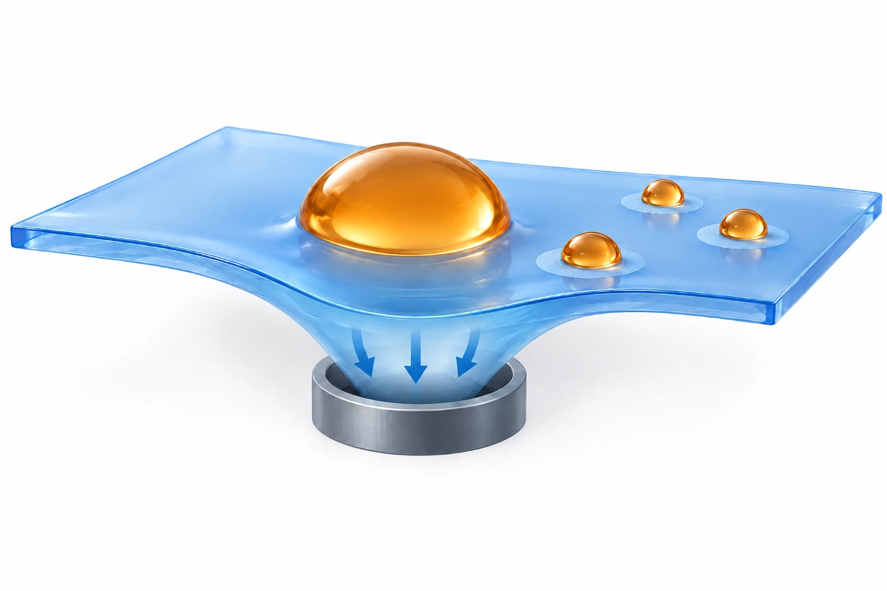

Research context and placement
Biofluid delivery to assay sites relates to analyte transport; ex vivo droplet handling does not directly establish tissue–material coupling.
Boundary case: assigned to the closest interface for navigation. Read the rationale and cross-links together; the primary theme does not delimit the study. Placement of foundational work does not establish direct bioelectronic application.
Constraints on droplet dispensing
A repellent surface can help move a sample with little retention, but an assay also needs liquid to remain at selected locations. Transport and dispensing therefore impose different requirements. The study combines these functions for liquids whose surface tension or viscosity complicates manipulation.
Deformable substrates and selective wetting
The vacuum tip does not aspirate the liquid. It deforms PDMS from below to create a moving local dimple. Droplets travel over the weakly adhesive SPO region, while SPI wettable patterns retain part of the liquid. Separating transport from retention makes pattern size and liquid properties relevant to dispensing, rather than vacuum settings alone.

AI-generated concept: a vacuum tip below deforms a soft substrate to guide droplets, while wettable patterns retain portions of liquid. Arrows indicate substrate deformation and circles denote wettable regions. This is not liquid aspiration, experimental evidence or a scale-accurate device rendering.
Only substrate-mediated transport and wettable retention are represented. This is not the complete dispensing sequence, reagent immobilization, colorimetric analysis, animal sampling or diagnostic validation. Deflection and droplet proportions are illustrative.
This is not a reproduced paper figure and does not establish permission to reuse the original figure.
Generated in ChatGPT on the web on 3 October 2026 from verified concepts in a public paper and compared with the reviewed main text. Display processing is limited to WebP encoding, without cropping or content editing.
Dispensing and colorimetric assessment
Dispensing was evaluated by changing wettable-pattern diameter and measuring retained daughter droplets. The assay adds another sequence: enzyme and color reagents are deposited and dried first, sample aliquots are dispensed onto those zones, and the developed color is scanned. Successful droplet motion alone therefore does not establish assay performance; reagent placement, reaction, drying and image readout also matter.
Aliquot volumes and metabolite readout
For 1–2 mm patterns, water daughter droplets ranged from 0.05 to 1 μL; this is not the total starting-sample volume. Separate glucose, uric-acid and lactate zones enabled multiple colorimetric readouts. Glucose in mouse-derived samples was also compared with a meter. These results support integration of dispensing and assay zones, within the tested samples and workflow.
Boundaries of diagnostic interpretation
The mouse comparison does not establish human diagnostic validity. The main text and methods also use different plasma/sera terminology, so the explanation keeps a neutral sample description. SI covering device details, evaporation and storage stability remains inaccessible. Main-text results can be described without treating deployment readiness or sample-preservation conditions as independently verified.
Related external research
Evaluation of the Droplet-Microarray Platform for High-Throughput Screening of Suspension Cells.
DOI: 10.1177/2211068216677204 ↗
The public API abstract describes patterned droplet arrays for parallel suspension-cell treatment and imaging.
Cell culture/drug response and single-plasma-drop metabolite assays differ in sample and readout; small volume does not establish equivalence.
Abstract checkedCorresponding-author verification
Jungmok Seo: corresponding authorThis record concerns Jungmok Seo’s correspondence designation. Author order or an asterisk alone is not treated as confirmation; this check is separate from verification of the research content.
- Correspondence evidence source ↗
Corresponding Authors; E-mail: [omitted]; E-mail: [omitted]
PDF p.8; author/correspondence information · publisher_PDF_publicly_hosted_by_author_institution
- Main-text review scope
- Institution-hosted publisher PDF p.1–9: introduction, complete Results and Discussion, Conclusion, Materials and Methods, selected-figure captions and author information. The initially truncated p.5–6 extraction was read separately in full. Individual references were not independently checked.
- Supplementary review scope
- Not read. The exact SI PDF URL linked within the main PDF returned HTTP 403. ACS Figshare DOI landing returned HTTP 202 with an empty body. SI and movies are not treated as viewed.
- Pending verification
- The SI PDF returned HTTP 403 and the Figshare DOI page returned HTTP 202 with an empty body; SI and movies were not viewed. Plasma/sera terminology remains inconsistent, and device details, evaporation, storage stability and human diagnostic validity remain unverified.
COVERAGE & OUTREACH
Coverage and outreach
Links are checked for their relationship to this paper. Media publication does not establish independent reporting or additional experimental validation.
체액 한 방울만으로 몸속 질병 진단한다 ↗
The Seo–Lee teams, stretchable silicone wetting control, vacuum droplet manipulation and ACS Nano attribution identify paper 43; no DOI is printed.
Body read Read the byline, date and body. The article uses KIST material and researcher statements; independent reporting was not established. Its headline is not evidence of clinical validation.
국내 연구진, 체액 한 방울로 질병 진단하는 바이오센서 기술 개발 ↗
The Seo–Lee collaboration, multiplex colorimetric droplet analysis and ACS Nano publication details match paper 43; the DOI is absent.
Body read Read the body, byline and date. It reports a KIST announcement; independent reporting was not verified. Clinical claims and quantities are not reused as research evidence.
KIST·연세대 연구팀, 혈액검사 혈액량 100분의 1로 줄이는 기술 개발 ↗
The named teams, stretchable coated surface, vacuum droplet control and ACS Nano attribution match paper 43, also linked by the lab announcement.
Body read Read the publication date and article body. It cites a KIST announcement; independent verification was not established. The headline ratio is not adopted as a research value.
혈액 한 방울로 질병진단 가능해진다 ↗
The named teams, vacuum manipulation, coated stretchable substrate, multiplex assay and ACS Nano date match paper 43.
Body read Read the body and date. This is coverage of a KIST announcement with unverified reporting independence. Clinical expectations remain separate from study evidence.
[News] “미세 액적 제어 시스템” 언론 보도 ↗
The lab identifies its droplet-control collaboration with Seo at KIST and links the verified articles about paper 43.
Body read Read the lab's announcement, date and outbound links. Its list of media outlets does not establish a verified article count.
Unverified candidates and access limits (3)
Unverified candidate · 바이오센서용 나노코팅기판 개발…소량 시료로 정밀측정 가능 ↗
The public seed and indexed snippet match the teams and coated-substrate bioassay, but direct article-body verification remains incomplete.
Body access limited Direct opening failed. Only the indexed title and snippet were available; the date was not checked in the article body.
Unverified candidate · '체액 한 방울'로 다양한 질병 동시 진단 ↗
The indexed KIST–Yonsei team and colorimetric biofluid-assay description suggest paper 43.
Body access limited Direct opening returned HTTP 403. Only the snippet was read; it is not a confirmed article.
Unverified candidate · 국내 연구진, 체액 한 방울로 질병 진단 기술 개발 ↗
The indexed Seo–Lee collaboration and biofluid-assay topic suggest paper 43.
Body access limited Direct opening did not return the article body. The body and date remain unverified.
Sources and verification scope
Institution-hosted publisher PDF p.1–9: introduction, complete Results and Discussion, Conclusion, Materials and Methods, selected-figure captions and author information. The initially truncated p.5–6 extraction was read separately in full. Individual references were not independently checked.
The additional commentary is editorially approved within the stated evidence scope. This does not imply complete verification of all main-text and supplementary material.
- Additional main-text review scope
- Institution-hosted publisher PDF p.1–9: introduction, complete Results and Discussion, Conclusion, Materials and Methods, selected-figure captions and author information. The initially truncated p.5–6 extraction was read separately in full. Individual references were not independently checked.
- Additional supplementary review scope
- Not read. The exact SI PDF URL linked within the main PDF returned HTTP 403. ACS Figshare DOI landing returned HTTP 202 with an empty body. SI and movies are not treated as viewed.
- Public publication baseline ↗ · #43 · 2026-10-03
- Crossref metadata ↗: This Crossref entry records a public bibliographic metadata check. The actual abstract, main-text and supplementary reading scope is documented separately on this page; a metadata check does not establish full-text reading or a complete main-text and supplementary audit. Manual comparison found presence/absence of the article A. This was adjudicated as a minor bibliographic variation referring to the same paper; original values were retained. This Crossref record has no license link and does not by itself establish permission to redistribute text or figures. Figure-specific reuse conditions are documented separately in the figure credits and rights record.
- PubMed abstract ↗
public_abstract · Abstract; read 2026-10-03; full text and supplements not audited - Single-Droplet Multiplex Bioassay on a Robust and Stretchable Extreme Wetting Substrate through Vacuum-Based Droplet Manipulation ↗
main_text · Introduction, p.1–2; constraints on droplet transport and dispensing - Single-Droplet Multiplex Bioassay on a Robust and Stretchable Extreme Wetting Substrate through Vacuum-Based Droplet Manipulation ↗
main_text · Results p.4–6, Figure 4: moving tip below substrate, dimple-guided transport, SPI adhesion and parent/daughter distinction; methods p.8 - Single-Droplet Multiplex Bioassay on a Robust and Stretchable Extreme Wetting Substrate through Vacuum-Based Droplet Manipulation ↗
main_text · Figure 4 and accompanying dispensing analysis, p.5–6 - Single-Droplet Multiplex Bioassay on a Robust and Stretchable Extreme Wetting Substrate through Vacuum-Based Droplet Manipulation ↗
main_text · Colorimetric Bioassay subsection and Figure 5; assay methods p.8 - Single-Droplet Multiplex Bioassay on a Robust and Stretchable Extreme Wetting Substrate through Vacuum-Based Droplet Manipulation ↗
main_text; interpretation separates fluid handling from complete assay readout · Colorimetric-Analysis-Based Multiplex Bioassays: reagent prepatterning/drying, analyte dispensing/drying, scanner and color-intensity analysis - Single-Droplet Multiplex Bioassay on a Robust and Stretchable Extreme Wetting Substrate through Vacuum-Based Droplet Manipulation ↗
main_text · First results paragraph, 1–2 mm pattern-diameter comparison and water daughter-droplet volume - Single-Droplet Multiplex Bioassay on a Robust and Stretchable Extreme Wetting Substrate through Vacuum-Based Droplet Manipulation ↗
main_text · Colorimetric Bioassay subsection; Table 1; Figure 5d–e - Single-Droplet Multiplex Bioassay on a Robust and Stretchable Extreme Wetting Substrate through Vacuum-Based Droplet Manipulation ↗
editorial interpretation of reported geometry and volumes · Parent-versus-daughter droplet distinction; equation 1 discussion - Single-Droplet Multiplex Bioassay on a Robust and Stretchable Extreme Wetting Substrate through Vacuum-Based Droplet Manipulation ↗
main_text · Mouse comparison and storage-stability references to Figures S11–S12 - Single-Droplet Multiplex Bioassay on a Robust and Stretchable Extreme Wetting Substrate through Vacuum-Based Droplet Manipulation ↗
main_text · Mouse sample methods; evaporation discussion referencing Figures S14–S15 - Single-Droplet Multiplex Bioassay on a Robust and Stretchable Extreme Wetting Substrate through Vacuum-Based Droplet Manipulation ↗
independent_reviewer_selected_main_text · PDF pp.1,4–8: droplet manipulation, dispensing, bioassay and Methods. SI not read. - Additional commentary source ↗
Research background · Introduction, p.1–2; constraints on droplet transport and dispensing · main_text - Additional commentary source ↗
Approach and advances · Results p.4–6, Figure 4: moving tip below substrate, dimple-guided transport, SPI adhesion and parent/daughter distinction; methods p.8 · main_text - Additional commentary source ↗
Evaluation and conditions · Figure 4 and accompanying dispensing analysis, p.5–6 · main_text - Additional commentary source ↗
Evaluation and conditions · Colorimetric Bioassay subsection and Figure 5; assay methods p.8 · main_text - Additional commentary source ↗
Evaluation and conditions · Colorimetric-Analysis-Based Multiplex Bioassays: reagent prepatterning/drying, analyte dispensing/drying, scanner and color-intensity analysis · main_text; interpretation separates fluid handling from complete assay readout - Additional commentary source ↗
Key findings · First results paragraph, 1–2 mm pattern-diameter comparison and water daughter-droplet volume · main_text - Additional commentary source ↗
Key findings · Colorimetric Bioassay subsection; Table 1; Figure 5d–e · main_text - Additional commentary source ↗
Limits and open questions · Parent-versus-daughter droplet distinction; equation 1 discussion · editorial interpretation of reported geometry and volumes - Additional commentary source ↗
Limits and open questions · Mouse comparison and storage-stability references to Figures S11–S12 · main_text - Additional commentary source ↗
Limits and open questions · Mouse sample methods; evaporation discussion referencing Figures S14–S15 · main_text - Additional commentary source ↗
Limits and open questions · SI PDF link embedded in publisher main PDF p.7–8 · attempt_only_HTTP_403; no SI contents read - Additional commentary source ↗
Connections to related work · Existing verified public API abstract for Evaluation of the Droplet-Microarray Platform for High-Throughput Screening of Suspension Cells · abstract_only; comparison boundary is editorial - Additional commentary source ↗
Connections to related work · Metabolite colorimetry and mouse-derived samples · main_text